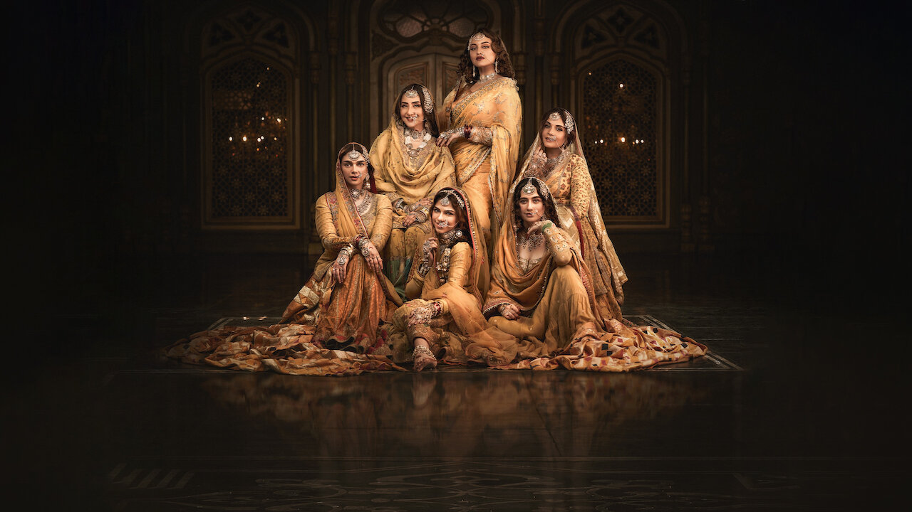

The Diamond Market
Heeramandi: The Diamond Bazaar is a visually stunning period drama by Sanjay Leela Bhansali that explores the lives of courtesans in pre-independence India. Set in the culturally rich district of Lahore’s Heeramandi, the series delves into themes of power, love, betrayal, and sacrifice through the lens of women who navigated both beauty and pain in a world ruled by patriarchy and politics. With grand sets, powerful performances, and emotionally layered storytelling, *Heeramandi* combines history and drama in Bhansali’s signature cinematic style. It’s a bold and poetic portrayal of forgotten voices, making it a unique and unforgettable watch.